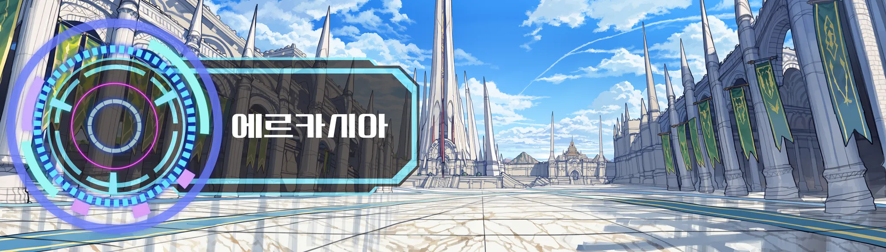
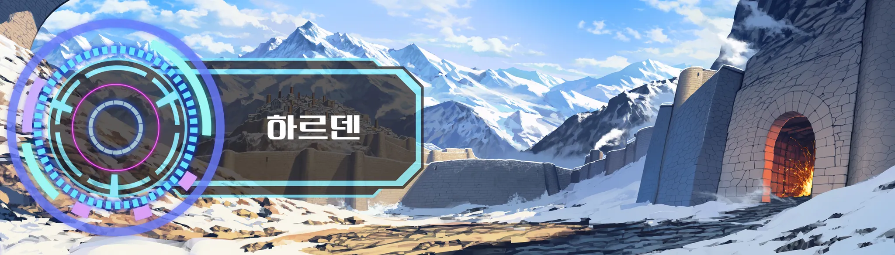
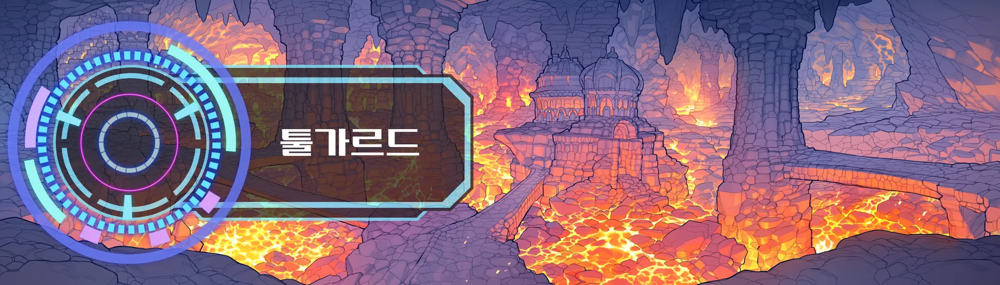
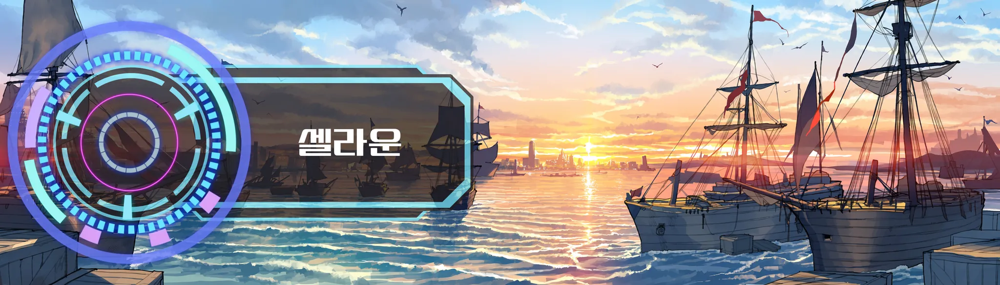
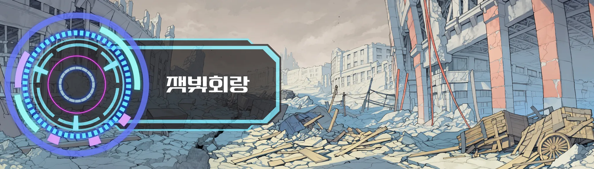
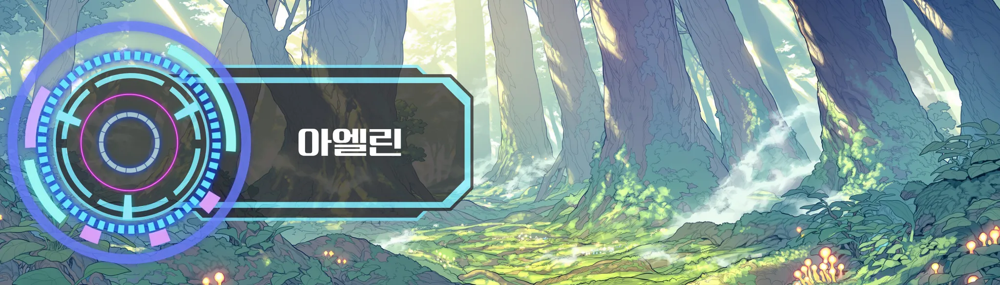
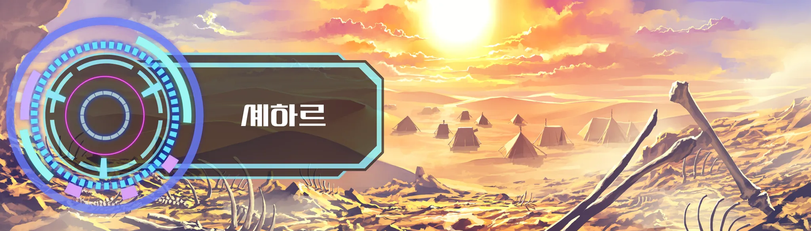
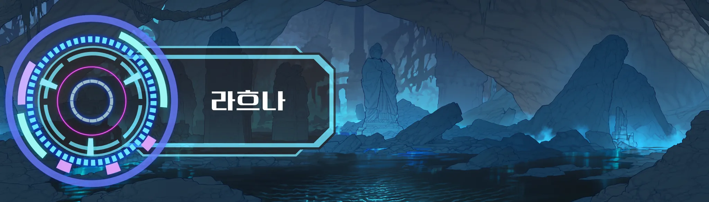
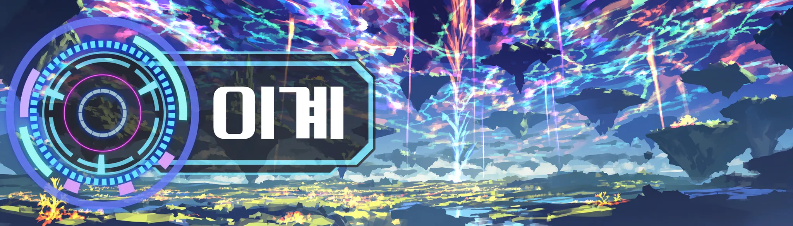

벨라트 대륙
고대 마법 문명이 무너지고 800년. 마법은 새로 만들지 못하고, 유적에서 나온 고대의 것을 되살려 쓴다. 대륙 어딘가는 늘 끓고 있다.
제국 하나, 왕국 셋, 그리고 여섯 곳
지역마다 레벨대가 이어져 있어서, 사냥터를 옮기는 것 자체가 진행이 된다. 종족은 인간, 드워프, 엘프, 유목민, 그리고 할라크족.
 로한 델리엇
로한 델리엇 유안
유안 셀리아
셀리아 가르시 렌
가르시 렌 마르타
마르타 울산강펀치
울산강펀치
카르시온
동반부 제국 · 수도 에르카시아황제와 5대 공작가의 제국. 등록하면 특혜를 받지만 다른 나라 명성이 깎인다. 최상위 전직이 여기 있다. 공작가의 계승 경쟁은 터지면 정변이다.
- 사냥터
- 흑철 관문 외곽 40–48고사목 지대 45–52
- 던전
- 흑철 지하감옥 (유적) 42–52
- 신앙
- 솔마르
 베른하르트 콜
베른하르트 콜
하르덴
북방 산악 · 씨족 연합철광의 땅. 제국은 병합을, 씨족 연합은 독립을 원한다. 북부 국경은 전면전에 가장 가까운 선이다. 겨울에는 마수가 남하한다.
- 사냥터
- 서리치 갱도 입구 22–30눈보라 능선 30–38
- 던전
- 서리치 갱도 (유적) 25–35
- 신앙
- 하눔

 토르빈
토르빈 핑뀨꽁주
핑뀨꽁주
미르젠
남서 해안 · 항구 도시 셀라운상단 연합이 실세이고 작위를 사고판다. 제국의 해상 관세를 두고 봉쇄와 해전이 오가고, 그 틈에서 밀수와 해적이 자란다.
- 사냥터
- 소금 습지 25–33난파 해안 33–40
- 던전
- 가라앉은 항로 (유적) 30–40
- 신앙
- 넬리아

 이스라
이스라 무명
무명
아엘린
서부 · 엘프령명성이 있어야 들어간다. 벌목이나 수렵 이력이 있으면 안 된다. 벌목하는 이방인이 늘수록 숲 경계가 날카로워진다.
- 사냥터
- 안개 수림 48–55
- 던전
- 뿌리의 방 (유적) 50–58
- 신앙
- 이웬
 네이아
네이아
셰하르
남동 사막 · 유목거점이 계속 움직인다. 건기마다 물과 체온, 오아시스를 두고 부족끼리 다툰다.
- 사냥터
- 열사 분지 50–58
- 던전
- 모래 아래 신전 (유적) 52–60

 카시엘
카시엘 줄리엣
줄리엣전쟁의 씨앗, 여덟 줄
대립선이 끓다가 터지면 사변이 된다. 운영사는 사변을 직접 쓰지 않는다고 홍보한다. 대륙이 알아서 만든다는 것. 그래서 사변이 터질 때마다 커뮤는 "이거 운영 각본이냐 아니냐"로 한 번씩 싸운다.
- 카르시온 ↔ 하르덴
북부 국경의 철광. 제국은 병합을, 씨족 연합은 독립을 원한다. 전면전에 가장 가까운 선.
- 리아텔 영주 할거
왕권이 약해 영주끼리 영지를 다툰다. 계승 문제가 터지면 내전. 로한 델리엇이 한 축.
- 미르젠 상단 ↔ 제국 해상 관세
봉쇄·해전·상단 간 다툼. 밀수와 해적이 그 틈에서 자란다.
- 아엘린 ↔ 개척민·벌목꾼
숲 경계 분쟁. 벌목하는 이방인이 늘수록 날카로워진다.
- 셰하르 부족 간
건기마다 오아시스 쟁탈.
- 카르시온 내부
5대 공작가의 계승 경쟁. 터지면 정변.
- 칼데스 ↔ 대륙
카시엘이 이끄는 할라크족 군세. 이방인 축출을 명분으로 한 원정.
- 길드 ↔ 길드
사냥터·영지·공성. 플레이어끼리의 전쟁. 파랑스가 최대 세력.
침공의 근원
전쟁이 사람 사이의 일이라면, 이쪽은 대륙 바깥과 아래에서 온다.
- 라흐나 침강지
봉인지가 약해지면 마물이 넘쳐 나온다. 범람. 대륙 최대의 침공원.
- 균열
무작위로 열린다. 아무도 닫지 않으면 넓어지고, 결국 마물이 밖으로 쏟아진다.
- 마수 이동
하르덴의 겨울 남하, 셰하르의 건기 이동.
- 유적 폭주
무리한 발굴이 잠든 고대 유물을 깨운다.

할라크족과 칼데스
고대 흑룡의 피를 이은 장수 종족. 검은 굽은 뿔과 용의 금안을 지니고 수백 년을 산다. 인간 왕국보다 먼저 대륙에 있었다는 자부가 강하고, 라흐나 침강지 가장자리 고지대에 산다. 칼데스는 카시엘이 이끄는 그들의 군세다. 목적은 하나, 이방인을 대륙에서 몰아내는 것.
이방인은 죽어도 돌아오니 같은 봉인지를 주마다 들쑤신다. 그럴수록 봉인이 얇아진다. 카시엘이 이방인을 재앙이라 부르는 건 증오가 아니라 이 계산 때문이고, 본인이 대놓고 하는 말이다. 레이드라는 게임 행위가 곧바로 대륙의 정세로 이어진다.
신들은 침묵하지 않는다
다만 땅에 내려오지도 않는다. 신탁과 축복은 반드시 신전의 신관을 거쳐서 온다. 한 신의 신관에게 신뢰를 얻으면 다른 신전에서 냉대받는 일도 있다.
솔마르빛 · 맹세
카르시온 제국이 가장 크게 모신다. 기사 서약과 계약의 증인.
베레스대지 · 수확
리아텔 농촌의 신. 기근·흉작 사변 때 신전이 붐빈다.
하눔불 · 대장간
하르덴 씨족과 툴가르드 드워프가 모신다.
넬리아바다 · 교역
미르젠 상단의 신. 출항 전 축복이 관례.
이웬숲 · 생명
아엘린 엘프와 치유사들이 모신다.
모르가죽음 · 안식
원주민의 장례를 맡는다. 신관들은 이방인을 '안식을 모르는 자'라 부르며 가장 껄끄러워한다.

균열 너머, 이계
균열은 예고 없이 열리고 일정 시간 뒤 닫힌다. 깊은 균열 너머에는 다른 세계가 이어져 있다. 마계나 천계 같은 구분 없이 하나의 '이계'로 부른다. 벨라트 대륙 밖, 최고 난도의 무대.